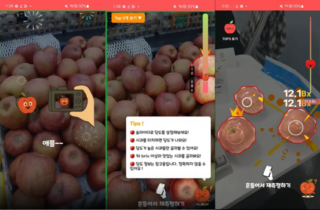
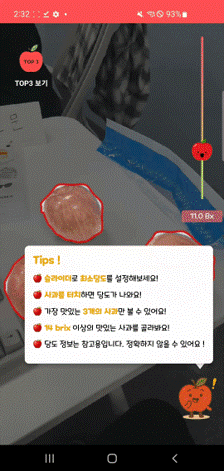
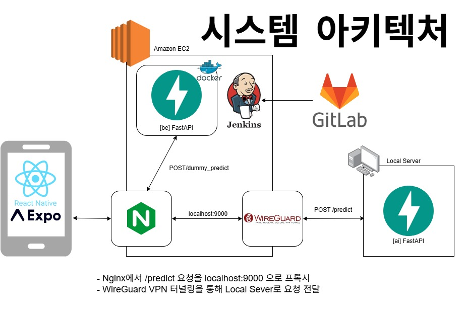

YOLO기반 객체 탐지와 CNN기반 회귀모델을 통해 사과의 당도를 예측.
GitHub 바로가기

CNN + 수작업 특징 기반 Fusion모델 선정
: 특징 만으로 당도 예측 모델의 신뢰성 부족으로,
CNN모델을 추가하여 구현함.
- CNN회귀모델을 활용한 당도예측 모델 개발
- 푸른 사과 예외로직 구현
- 실측 테스트를 통해 신뢰도 확보


[문제]
수치 기반 feature 단독 사용 시
당도에 대한 설명력이 제한적(상관계수: 0.18)
[해결]
EfficientNet-B0 기반 CNN에서 이미지로부터 고차원 특징을 추출하고,
기존 수치 기반 feature와 결합하여 총 1286차원의 feature 벡터를 구성.
이를 입력으로 하는 PyTorch 기반 MLP 회귀 모델을 설계하여 End-to-End 방식으로 학습
[결과]
MAE가 1.15로 감소, 상관계수(R²)가 0.45로 개선되어
당도 예측 성능 향상
[문제]
이미지 기반 당도 예측 시 추론 시간이 약 7초로 길어
실시간 서비스 적용이 어려움
[해결]
입력 이미지의 ROI를 64×64 크기로 축소하는 전처리 구조를 적용하고,
FastAPI 기반 백엔드 구조를 도입하여 모델 추론 파이프라인을 최적화
[결과]
응답 시간을 약 7초 → 1초로 단축하여
실시간 서비스 적용이 가능한 수준으로 개선